Other recruitment tags
← regions and settlements · wiki index
Region markers that recruitment checks but that are neither a recruitment zone nor a homeland. A unit requirement "not in a Ptolemaic region" means the unit cannot be raised in the regions listed under that marker here, whoever holds them.
Legio i senatoria early
1 region · 2 units
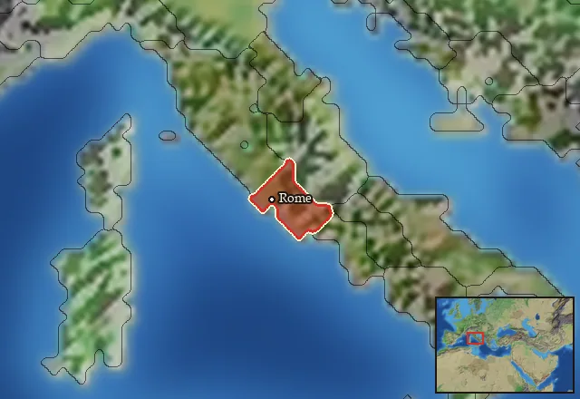
Regions in this zone (1)
Legio v alaudae early
10 regions · 2 units
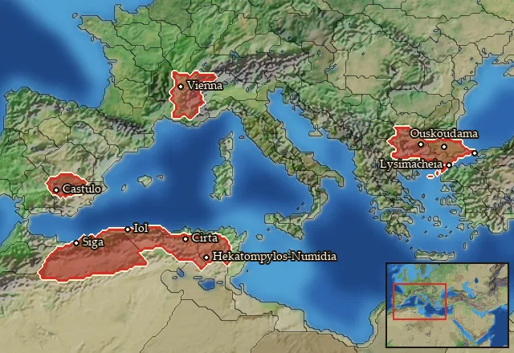
Regions in this zone (10)
Allobrogia · Ay-Khol · Bosporos · Brenaia · Eumolpia · Kardia · Kirthan · Massylia Occidentalis · Oretania Meridionalis · Shigan
Legio v early
1 region · 2 units
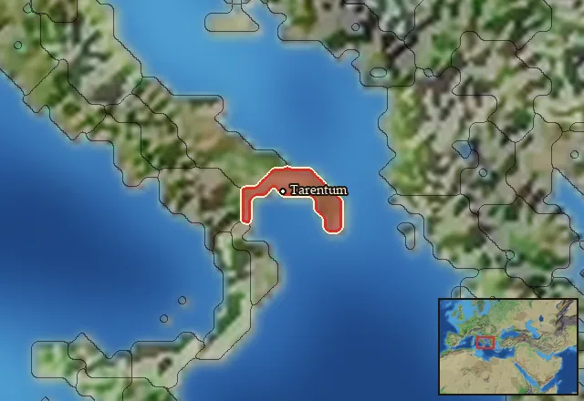
Regions in this zone (1)
Legio vi ferrata early
32 regions · 2 units
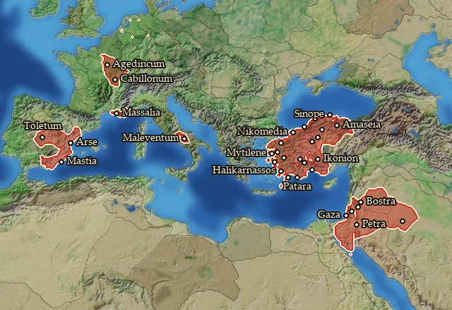
Regions in this zone (32)
Aeduia · Auranitis · Bithynia · Carpetania · Gazaia · Hellenike Mariandynia · Ionia · Ioudaia · Kaikia · Karia · Lesbos · Lydia · Lykaonia · Lykia · Mastienia · Megale Phrygia · Mysia · Pamphylia · Paphlagonia · Paroreia Phrygia · Pisidia · Pontos · Rabat Xaman · Raqemo · Rhaabenia · Rhodos · Saguntia · Samnium · Segobrigia · Senonia · Sinopeia · Tektosagia
Legio viii gallica early
5 regions · 2 units
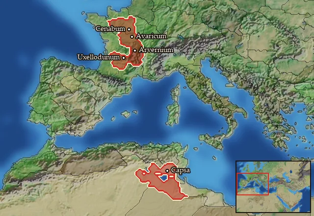
Legio x equestris early
9 regions · 2 units
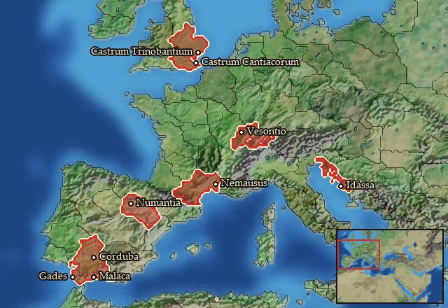
Regions in this zone (9)
Agadir · Arecomicia · Arevacia · Cantiacia · Liburnia · Malaka · Sequania · Trinobantia · Turdetania Septentrionalis
Legio xi early
2 regions · 2 units
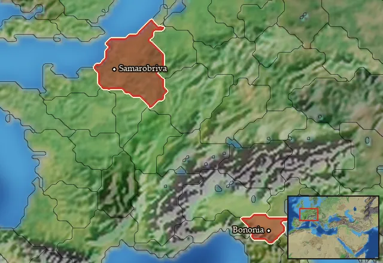
Legio xii antiqua paterna fulminata early
17 regions · 2 units
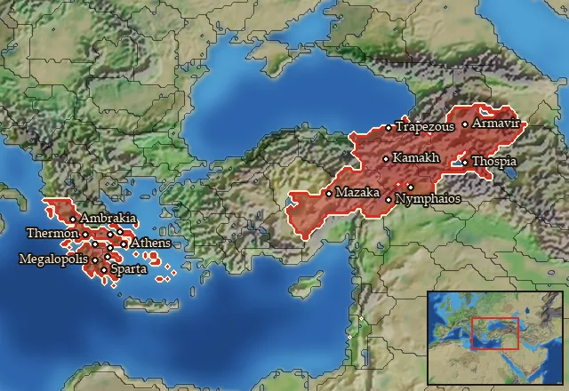
Regions in this zone (17)
Achaia · Aitolia · Ambrakikos Kolpos · Argolis · Arkadia · Attike · Basoropeda · Boiotia · Euboia · Hellenike Makronia · Kappadokia · Kommagene · Korinthia · Lakonia · Megale Armenia · Mikra Armenia · Sophene
Legio xv apollinaris early
8 regions · 2 units
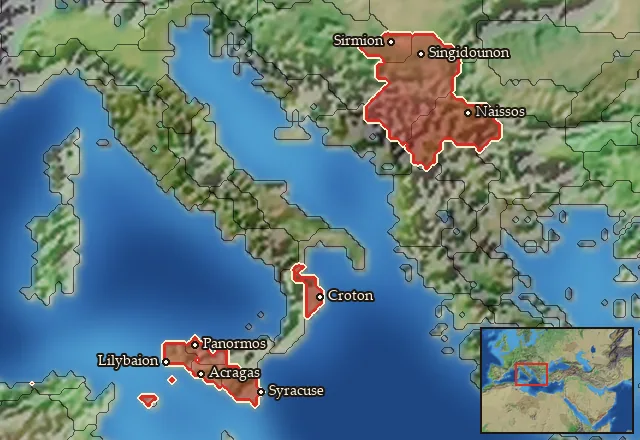
Regions in this zone (8)
Akragas · Amantinia · Epikrateia · Kroton · Naissitania · Skordiskia · Trinakria · Ziz
Legio xv early
3 regions · 2 units
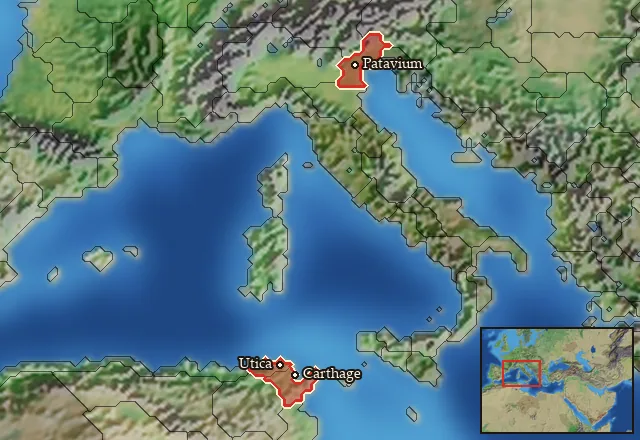
Regions in this zone (3)
Legio i early
1 region · 2 units
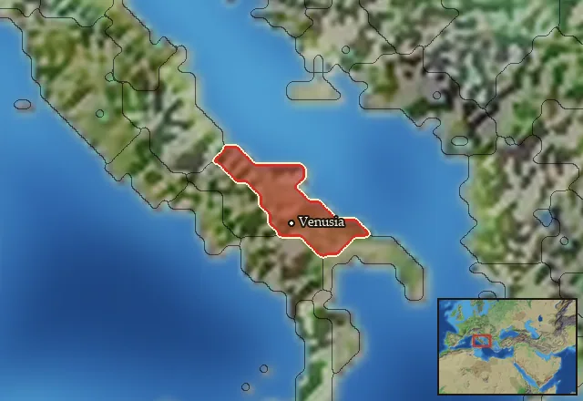
Regions in this zone (1)
Legio iii cyrenaica early
20 regions · 2 units
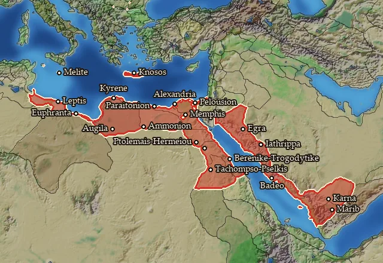
Regions in this zone (20)
Ammonia · Boreia Trogodytike · Dodekaschoinos · Gynaikopolites Nomos · Hesperos Aigyptos · Kassanitis · Kyrenaike · Lechienia · Lepqi Adir · Maleth · Memphites Nomos · Minoa · Nasamonia · Pathyrites Nomos · Pelousiake · Qarnawu · Sabaia · Syrtis · Thinites Nomos · Yathrib
Legio iii gallica early
5 regions · 2 units
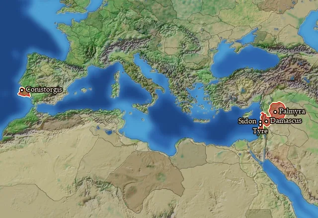
Legio iiii macedonica early
6 regions · 2 units
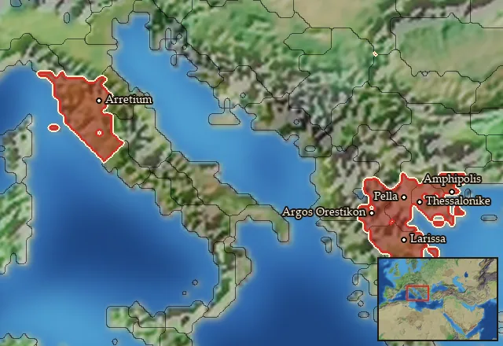
Legio iiii parthica early
25 regions · 2 units
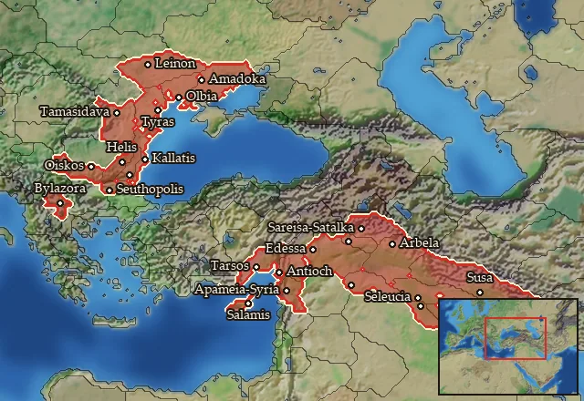
Regions in this zone (25)
Apamene · Arbelitis · Babylonia · Borysthenes · Carpiania · Charakene · Georgike Skythia · Getaia · Gordyene · Kallatia · Kilikia Pedias · Mesopotamia · Mygdonia-Syria · Odrysia · Olbiana · Orchoe · Osrhoene · Paionia · Salamina · Sousiane · Syria · Tingene · Triballia · Tyle · Tyrasia
Legio ix early
5 regions · 2 units
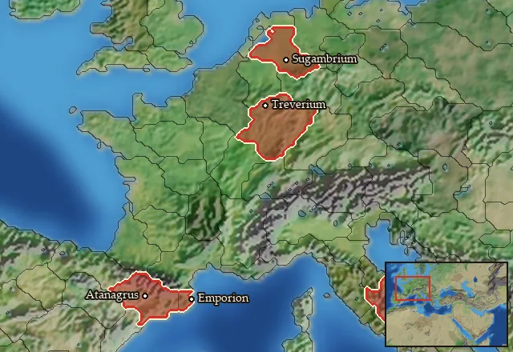
Legio vii paterna macedonica early
10 regions · 2 units
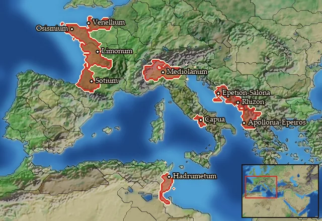
Legio x fretensis early
2 regions · 2 units
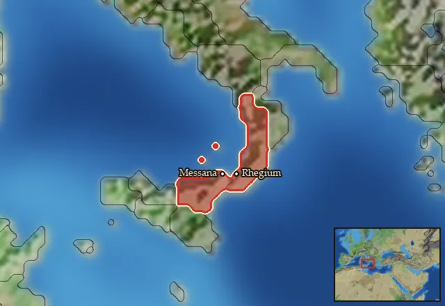
Legio xiii gemina early
4 regions · 2 units
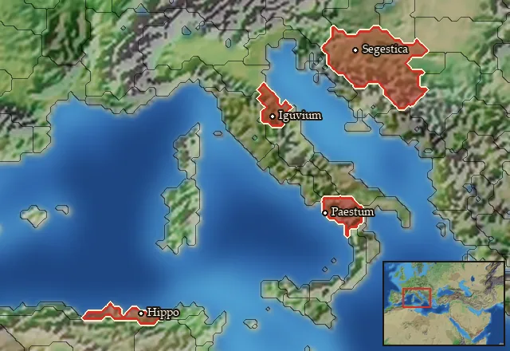
Regions in this zone (4)
Poseidonia · Savia · Umbria · Xupon
Legio xiiii early
4 regions · 2 units
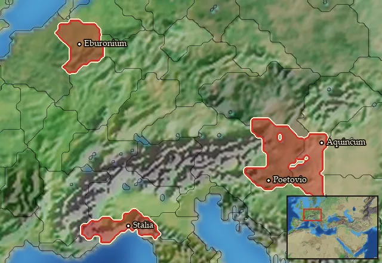
Ptolemaic
0 regions · 3 units
No region is in this zone at the start of the campaign, so the units below are not raisable anywhere then.
Seleucid
0 regions · 0 units
Has no effect in the current version.